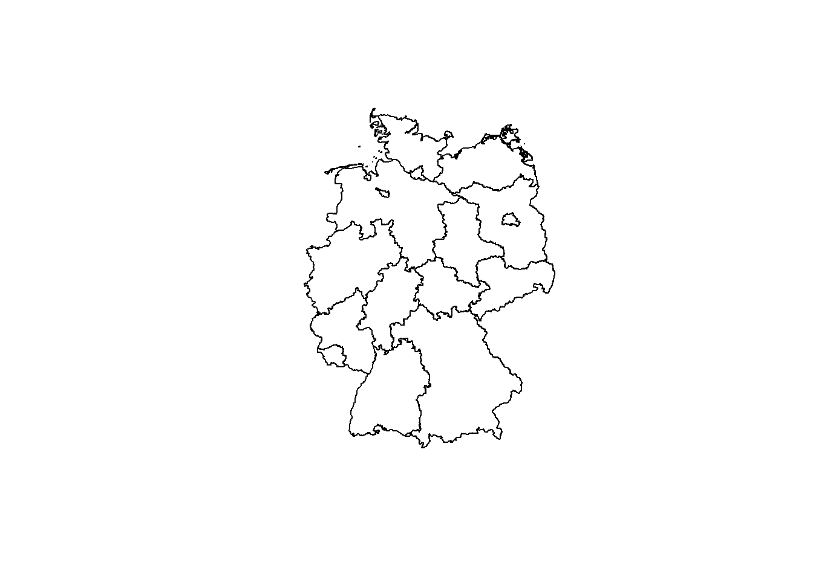
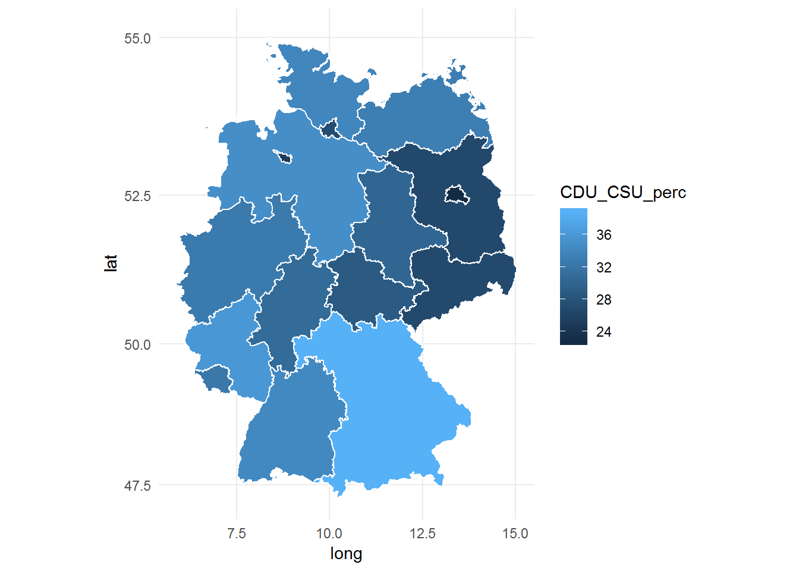
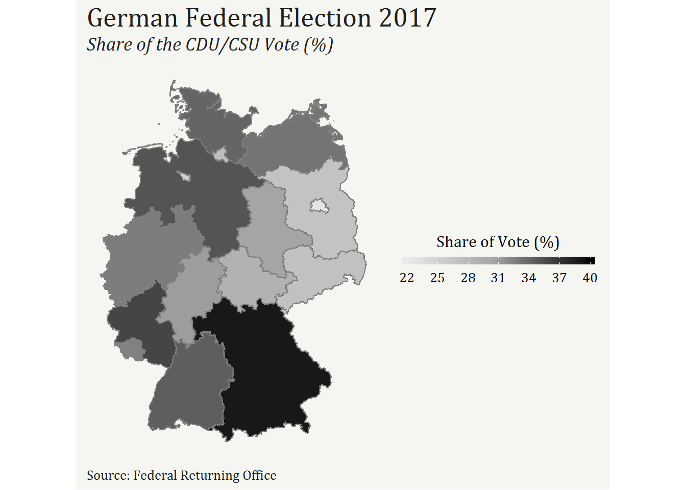
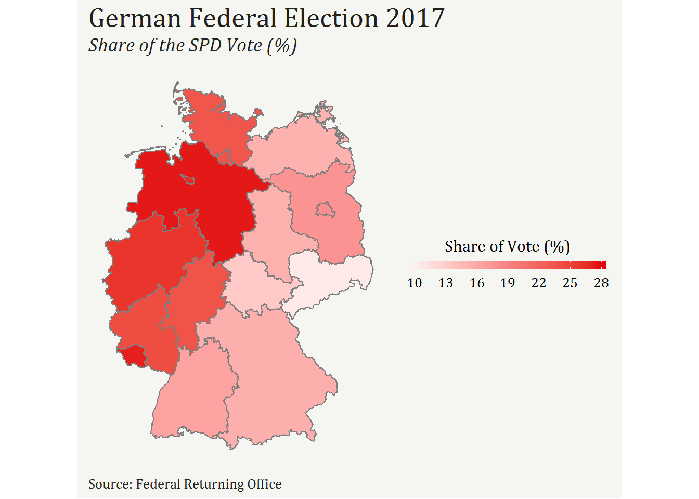
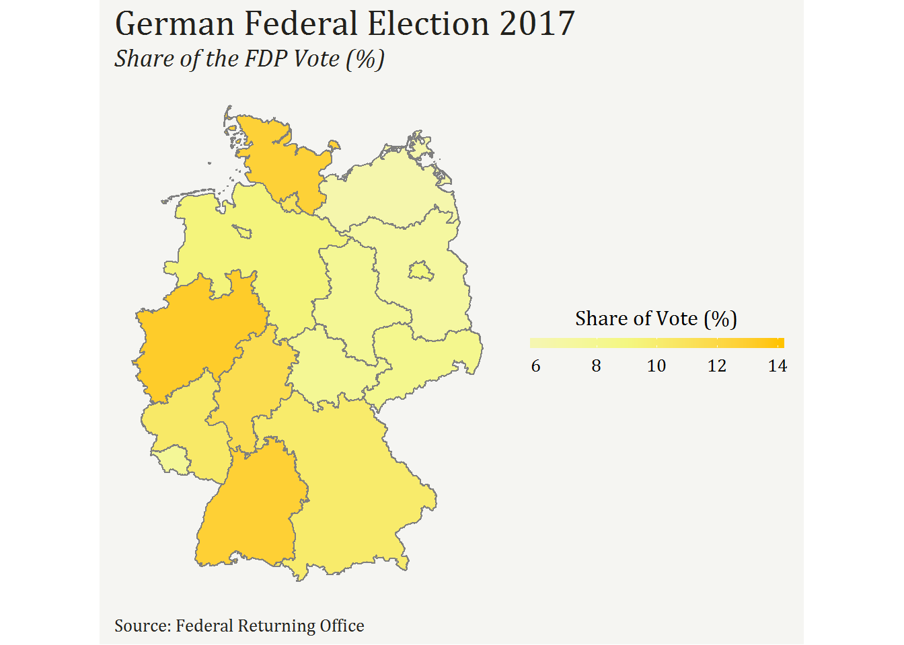
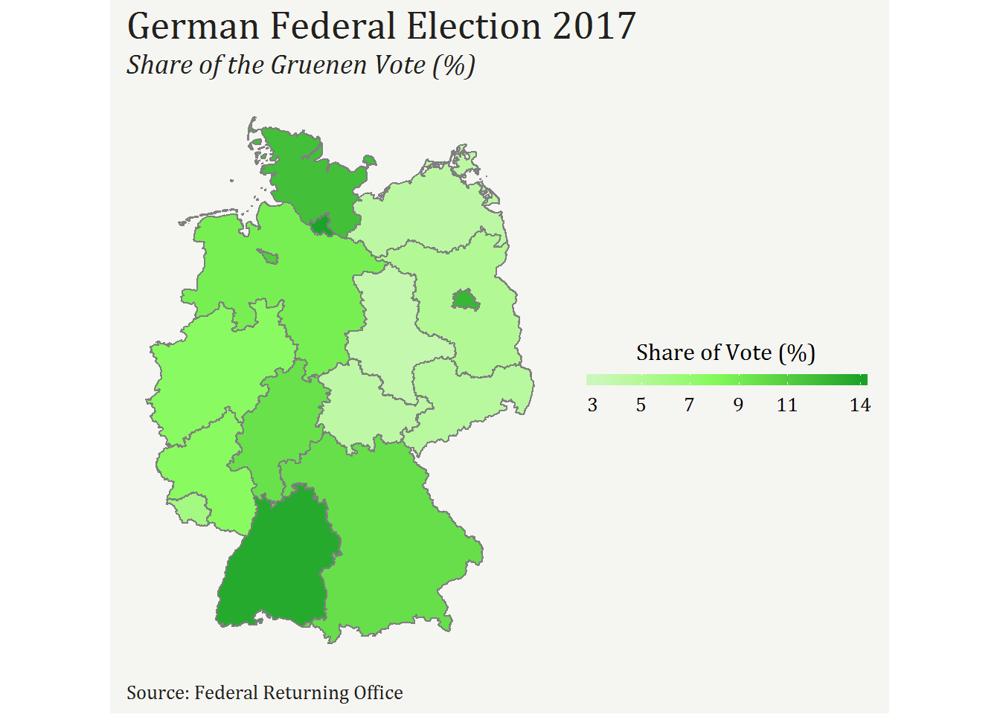
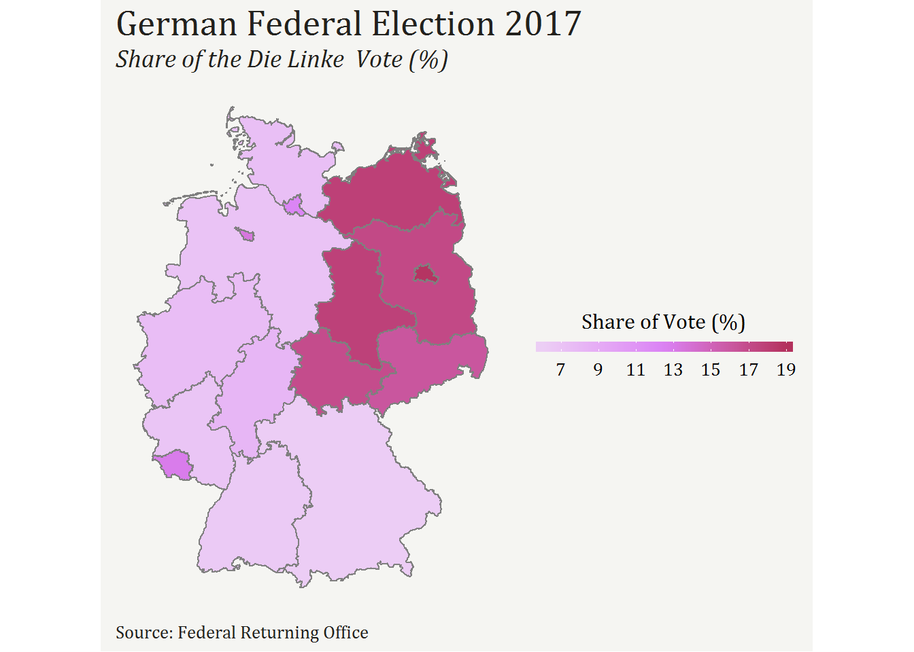
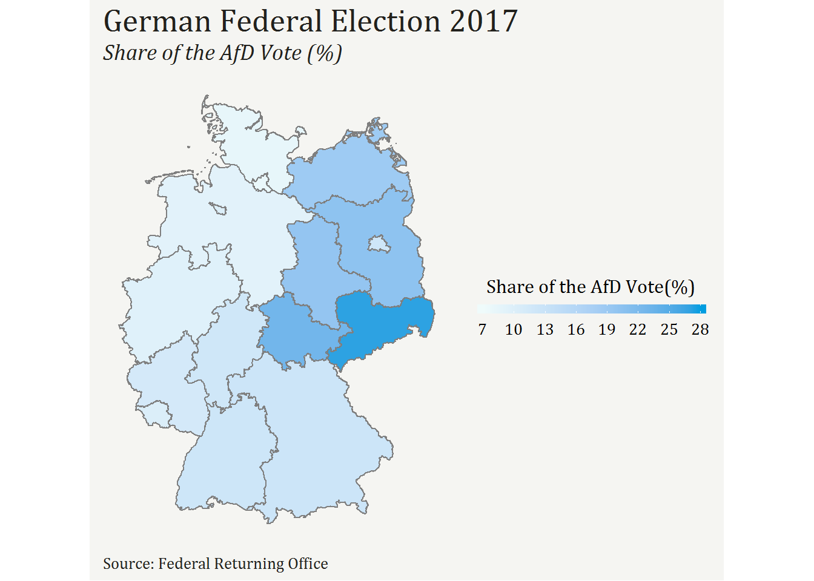

Using R to analyse the German Federal Election
As the title of this post implies we will analyze, using the statistical programming language R, the German Federal Election which took place on 24 September of 2017. It will not be an exhaustive analysis of the results. I’m only interested in visualizing the share of the vote that each party represented in the Parliament (i.e. Bundestag) received in each one of the 16 States of Germany.
In order to make this visualization possible in R, loading the respective packages is the first step.
# libraries needed
library(tidyverse) # load packages related to data cleaning (e.g. dplyr) and data visualization(ggplot2)
library(rgdal) # load shape files
library(broom) # transform shape files in data frames
library(readxl) # load excel files
library(here) # creates a path to the current directory
library(extrafont) # add new fontsNext, we need to get the file with the German Election results. We can get it from the Federal Returning Officer - https://www.bundeswahlleiter.de/en/bundestagswahlen/2017/ergebnisse.html
After the file is opened in Excel, we save it as .xlsx file in our working directory of R. Then, use the read_excel() function to load the file. We can also use the skip argument, as the first 5 rows of the spreadsheet are unnecessary.
# load file
germany_elections_untidy <- read_excel(here::here("btw17_kerg.xlsx"),
skip = 5)
# check file
glimpse(germany_elections_untidy)## Observations: 334
## Variables: 191
## $ Nr <dbl> ...
## $ Gebiet <chr> ...
## $ `gehört zu` <dbl> ...
## $ Wahlberechtigte <chr> ...
## $ X__1 <chr> ...
## $ X__2 <chr> ...
## $ X__3 <chr> ...
## $ Wähler <chr> ...
## $ X__4 <chr> ...
## $ X__5 <chr> ...
## $ X__6 <chr> ...
## $ Ungültige <chr> ...
## $ X__7 <chr> ...
## $ X__8 <chr> ...
## $ X__9 <chr> ...
## $ Gültige <chr> ...
## $ X__10 <chr> ...
## $ X__11 <chr> ...
## $ X__12 <chr> ...
## $ `Christlich Demokratische Union Deutschlands` <chr> ...
## $ X__13 <chr> ...
## $ X__14 <chr> ...
## $ X__15 <chr> ...
## $ `Sozialdemokratische Partei Deutschlands` <chr> ...
## $ X__16 <chr> ...
## $ X__17 <chr> ...
## $ X__18 <chr> ...
## $ `DIE LINKE` <chr> ...
## $ X__19 <chr> ...
## $ X__20 <chr> ...
## $ X__21 <chr> ...
## $ `BÜNDNIS 90/DIE GRÜNEN` <chr> ...
## $ X__22 <chr> ...
## $ X__23 <chr> ...
## $ X__24 <chr> ...
## $ `Christlich-Soziale Union in Bayern e.V.` <chr> ...
## $ X__25 <chr> ...
## $ X__26 <chr> ...
## $ X__27 <chr> ...
## $ `Freie Demokratische Partei` <chr> ...
## $ X__28 <chr> ...
## $ X__29 <chr> ...
## $ X__30 <chr> ...
## $ `Alternative für Deutschland` <chr> ...
## $ X__31 <chr> ...
## $ X__32 <chr> ...
## $ X__33 <chr> ...
## $ `Piratenpartei Deutschland` <chr> ...
## $ X__34 <chr> ...
## $ X__35 <chr> ...
## $ X__36 <chr> ...
## $ `Nationaldemokratische Partei Deutschlands` <chr> ...
## $ X__37 <chr> ...
## $ X__38 <chr> ...
## $ X__39 <chr> ...
## $ `FREIE WÄHLER` <chr> ...
## $ X__40 <chr> ...
## $ X__41 <chr> ...
## $ X__42 <chr> ...
## $ `PARTEI MENSCH UMWELT TIERSCHUTZ` <chr> ...
## $ X__43 <chr> ...
## $ X__44 <chr> ...
## $ X__45 <chr> ...
## $ `Ökologisch-Demokratische Partei` <chr> ...
## $ X__46 <chr> ...
## $ X__47 <chr> ...
## $ X__48 <chr> ...
## $ `Partei für Arbeit, Rechtsstaat, Tierschutz, Elitenförderung und basisdemokratische Initiative` <chr> ...
## $ X__49 <chr> ...
## $ X__50 <chr> ...
## $ X__51 <chr> ...
## $ Bayernpartei <chr> ...
## $ X__52 <chr> ...
## $ X__53 <chr> ...
## $ X__54 <chr> ...
## $ `Ab jetzt...Demokratie durch Volksabstimmung` <chr> ...
## $ X__55 <chr> ...
## $ X__56 <chr> ...
## $ X__57 <chr> ...
## $ `Partei der Vernunft` <chr> ...
## $ X__58 <chr> ...
## $ X__59 <chr> ...
## $ X__60 <chr> ...
## $ `Marxistisch-Leninistische Partei Deutschlands` <chr> ...
## $ X__61 <chr> ...
## $ X__62 <chr> ...
## $ X__63 <chr> ...
## $ `Bürgerrechtsbewegung Solidarität` <chr> ...
## $ X__64 <chr> ...
## $ X__65 <chr> ...
## $ X__66 <chr> ...
## $ `Sozialistische Gleichheitspartei, Vierte Internationale` <chr> ...
## $ X__67 <chr> ...
## $ X__68 <chr> ...
## $ X__69 <chr> ...
## $ `DIE RECHTE` <chr> ...
## $ X__70 <chr> ...
## $ X__71 <chr> ...
## $ X__72 <chr> ...
## $ `Allianz Deutscher Demokraten` <chr> ...
## $ X__73 <chr> ...
## $ X__74 <chr> ...
## $ X__75 <chr> ...
## $ `Allianz für Menschenrechte, Tier- und Naturschutz` <chr> ...
## $ X__76 <chr> ...
## $ X__77 <chr> ...
## $ X__78 <chr> ...
## $ `bergpartei, die überpartei` <chr> ...
## $ X__79 <chr> ...
## $ X__80 <chr> ...
## $ X__81 <chr> ...
## $ `Bündnis Grundeinkommen` <chr> ...
## $ X__82 <chr> ...
## $ X__83 <chr> ...
## $ X__84 <chr> ...
## $ `DEMOKRATIE IN BEWEGUNG` <chr> ...
## $ X__85 <chr> ...
## $ X__86 <chr> ...
## $ X__87 <chr> ...
## $ `Deutsche Kommunistische Partei` <chr> ...
## $ X__88 <chr> ...
## $ X__89 <chr> ...
## $ X__90 <chr> ...
## $ `Deutsche Mitte` <chr> ...
## $ X__91 <chr> ...
## $ X__92 <chr> ...
## $ X__93 <chr> ...
## $ `Die Grauen – Für alle Generationen` <chr> ...
## $ X__94 <chr> ...
## $ X__95 <chr> ...
## $ X__96 <chr> ...
## $ `Die Urbane. Eine HipHop Partei` <chr> ...
## $ X__97 <chr> ...
## $ X__98 <chr> ...
## $ X__99 <chr> ...
## $ `Madgeburger Gartenpartei` <chr> ...
## $ X__100 <chr> ...
## $ X__101 <chr> ...
## $ X__102 <chr> ...
## $ `Menschliche Welt` <chr> ...
## $ X__103 <chr> ...
## $ X__104 <chr> ...
## $ X__105 <chr> ...
## $ `Partei der Humanisten` <chr> ...
## $ X__106 <chr> ...
## $ X__107 <chr> ...
## $ X__108 <chr> ...
## $ `Partei für Gesundheitsforschung` <chr> ...
## $ X__109 <chr> ...
## $ X__110 <chr> ...
## $ X__111 <chr> ...
## $ `V-Partei³ - Partei für Veränderung, Vegetarier und Veganer` <chr> ...
## $ X__112 <chr> ...
## $ X__113 <chr> ...
## $ X__114 <chr> ...
## $ `Bündnis C - Christen für Deutschland` <chr> ...
## $ X__115 <chr> ...
## $ X__116 <chr> ...
## $ X__117 <chr> ...
## $ `DIE EINHEIT` <chr> ...
## $ X__118 <chr> ...
## $ X__119 <chr> ...
## $ X__120 <chr> ...
## $ `Die Violetten` <chr> ...
## $ X__121 <chr> ...
## $ X__122 <chr> ...
## $ X__123 <chr> ...
## $ `Familien-Partei Deutschlands` <chr> ...
## $ X__124 <chr> ...
## $ X__125 <chr> ...
## $ X__126 <chr> ...
## $ `Feministische Partei DIE FRAUEN` <chr> ...
## $ X__127 <chr> ...
## $ X__128 <chr> ...
## $ X__129 <chr> ...
## $ Mieterpartei <chr> ...
## $ X__130 <chr> ...
## $ X__131 <chr> ...
## $ X__132 <chr> ...
## $ `Neue Liberale – Die Sozialliberalen` <chr> ...
## $ X__133 <chr> ...
## $ X__134 <chr> ...
## $ X__135 <chr> ...
## $ `UNABHÄNGIGE für bürgernahe Demokratie` <chr> ...
## $ X__136 <chr> ...
## $ X__137 <chr> ...
## $ X__138 <chr> ...
## $ Übrige <chr> ...
## $ X__139 <chr> ...
## $ X__140 <chr> ...
## $ X__141 <chr> ...In the next step, this file needs to be cleaned. The goal is to have the columns with the German states and the absolute votes and correspondent percentage values of the 6 parties (i.e. CDU/CSU, SPD, FDP, AfD, Die Linke, and Gruenen) represented in the Bundestag. Note: Gruenen is written without the German umlauts (https://learn-german-easily.com/german-umlauts) since it is showing as an error.
To start the cleaning process, we need to create two vectors. The first one corresponds to even columns from the 20th to the 190th. These columns represent the “Zweitstimmen Endgueltig”, that is, the votes of each party that we are interested in maintaining. The second vector corresponds to the odd columns from the 3rd to the 87th. These columns will be deleted because they represent the votes of a specific candidate and not of a party - see German Federal Election System (http://www.spiegel.de/international/germany/german-election-system-explained-a-923243.html)
# create two new vectors
even_columns<-seq(20,190,2)
odd_columns<-seq(3,87,2) Now, it’s time to tidy up the data frame. Select the variables of interest and use the slice() function to select the rows which correspond to the 16 States of Germany. Afterwards, rename and delete some columns. Use mutate_at to transform some columns to numeric or character type. Subsequently, use mutate() to create new variables like the percentage values for each party in each State. Finally, reorder columns and delete some of them.
# clean the German Federal Election data frame
germany_tidy <- germany_elections_untidy %>%
# select columns of interest
select(1:2, even_columns) %>%
# select rows that correspond to the 16 States of Germany
slice(c(14, 22, 30, 62, 66, 78, 89, 103, 169, 187, 211, 221, 238, 286, 326, 332)) %>%
# rename columns' names - "new name" = "old name"
rename(state = Gebiet, CDU = X__14, SPD = X__17, DieLinke = X__20,
Gruenen = X__23, CSU = X__26, FDP = X__29, AfD = X__32,
Piraten = X__35, NPD = X__38, FW = X__41, PMUT = X__44,
ODP = X__47, PArbeit = X__50, BP = X__53, ADV = X__56,
PdV = X__59, MLPD = X__62, BS = X__65, SP = X__68,
DR = X__71, ADD = X__74, AMTS = X__77, BergP = X__80,
BG = X__83, DBewe = X__86, DKP = X__89, DMitte = X__92,
Grauen = X__95, UrbaneHipHop = X__98, MPartei = X__101,
MWelt = X__104, PH = X__107, PGesund = X__110,
VPartei = X__113, BCD = X__116, Einheit = X__119,
Violetten = X__122, FamilienP = X__125,
FPDF = X__128, Mieter = X__131, NLiberale = X__134,
UBD = X__137, U = X__140) %>%
# delete columns
select(-odd_columns) %>%
# mutate variables to numeric from the 3rd to the 45th column
mutate_at(vars(3:45), as.numeric) %>%
# mutate 1st column to character
mutate_at(vars(1), as.character) %>%
# create the CDU/CSU variable and all the percentage values of each party for each state
mutate(CDU_CSU = rowSums(.[c("CDU", "CSU")], na.rm = TRUE),
CDU_CSU_perc = CDU_CSU / rowSums(.[3:45], na.rm = TRUE) * 100,
SPD_perc = SPD / rowSums(.[3:45], na.rm = TRUE) * 100,
DieLinke_perc = DieLinke / rowSums(.[3:45], na.rm = TRUE) * 100,
Gruenen_perc = Gruenen / rowSums(.[3:45], na.rm = TRUE) * 100,
FDP_perc = FDP / rowSums(.[3:45], na.rm = TRUE) * 100,
AfD_perc = AfD / rowSums(.[3:45], na.rm = TRUE) * 100) %>%
# reorder and delete columns 10 to 45
select(Nr, state, CDU_CSU_perc,SPD_perc,
DieLinke_perc, Gruenen_perc, FDP_perc,
AfD_perc, CDU_CSU, everything(), -10:-45) However, we still need to recode the values of the Nr variable as they are not consistent with the values related to the German States within the shapefile of Germany that we have to load right after.
# recode variable NR - "old value" = "new value"
Nr_recode <- c("10" = "11", "9" = "1", "1" = "14", "4" = "4",
"13" = "7", "8" = "0","5" = "9", "6" = "6", "12" = "3",
"7" = "10", "14" = "12", "11" = "2", "15" = "13",
"2" = "5", "16" = "15", "3" = "8")
# assign new values to the Nr variable
germany_tidy$Nr <- Nr_recode[germany_tidy$Nr] Thereby, we need to finish the wrangling of the German Federal Election data frame. This is how it looks:
glimpse(germany_tidy)## Observations: 16
## Variables: 16
## $ Nr <chr> "14", "7", "5", "8", "4", "3", "13", "2", "9", "...
## $ state <chr> "Schleswig-Holstein", "Mecklenburg-Vorpommern", ...
## $ CDU_CSU_perc <dbl> 33.98934, 33.12773, 27.22698, 34.93629, 25.09877...
## $ SPD_perc <dbl> 23.28605, 15.06065, 23.50044, 27.44090, 26.76432...
## $ DieLinke_perc <dbl> 7.267138, 17.829242, 12.173991, 6.950305, 13.429...
## $ Gruenen_perc <dbl> 11.976340, 4.260224, 13.942183, 8.711579, 11.053...
## $ FDP_perc <dbl> 12.639241, 6.241981, 10.797266, 9.283564, 9.3451...
## $ AfD_perc <dbl> 8.181315, 18.588371, 7.822267, 9.088965, 10.0035...
## $ CDU_CSU <dbl> 583135, 307263, 266312, 1623481, 83409, 397839, ...
## $ CDU <dbl> 583135, 307263, 266312, 1623481, 83409, 397839, ...
## $ SPD <dbl> 399505, 139689, 229862, 1275172, 88944, 261822, ...
## $ DieLinke <dbl> 124678, 165368, 119076, 322979, 44629, 255721, 2...
## $ Gruenen <dbl> 205471, 39514, 136371, 404825, 36733, 74971, 462...
## $ CSU <dbl> NA, NA, NA, NA, NA, NA, NA, NA, NA, NA, NA, NA, ...
## $ FDP <dbl> 216844, 57895, 105610, 431405, 31056, 105485, 96...
## $ AfD <dbl> 140362, 172409, 76511, 422362, 33244, 301103, 24...Nonetheless, our goal is to create a map of Germany with the results of the German Federal Elections and for that, we need to load a shapefile of Germany. Go ahead and download the shapefile and save it in your working directory. After that, use the function readOGR() from the rgdal package to load the file in R.
# load shape file
germany <- readOGR(here(layer = "DEU_adm1.shp"), use_iconv = TRUE, encoding = "UTF-8") ## OGR data source with driver: ESRI Shapefile
## Source: "C:\Users\Diana\Downloads\hugoblog\DEU_adm1.shp", layer: "DEU_adm1"
## with 16 features
## It has 16 fieldsplot(germany) Ok, by now we will have one shapefile with the map of Germany and one data frame with the results of the German Federal Elections. So, they are separated from each other, but we must join them to visualize the elections’ results. Therefore, let’s prepare the shapefile to join the German Federal election data frame by creating a new variable called germany_states.
# prepare the shapefile with the map of germany to make it possible to join the dataframe of german elections
germany_states <- germany@data$NAME_1
germany@data$germany_states <- germany_states Next step will be to filter the state variable present in the German Federal election data frame with the correspondent variable created before in the shapefile.
# filter data for germany states
elections_data <- germany_tidy %>%
filter(state %in% germany_states) Now, everything is set to join both datasets, the shapefile and the German Federal Election data frame called elections_data.
Let’s join both.
# join datasets
germany@data <- germany@data %>%
left_join(elections_data,by = c("germany_states" = "state"))
# important step for the indexes to join
rownames(germany@data) <- germany@data$germany_states Finally, we must transform the previous object in a data frame. This is needed since plot shapefiles is not possible, only data frames. With this goal in mind, use the tidy() function from the broom package.
# transform the previous object in a dataframe
germany_dataframe <- tidy(germany) %>%
left_join(., germany@data, by = c("id" = "Nr")) Now, the data can be plotted. Here you can see a very basic plot with the share of the coalition CDU/CSU vote (%) in each State of Germany.
# plot
plot_basic_CDU_CSU <- germany_dataframe %>%
ggplot(aes(x = long, y = lat, group = group)) +
# we need to add this filter so that the Berlin
# and Bremen results can be mapped and
# distinguished from the Brandeburg and Niedersachsen results, respectively
geom_polygon(aes(fill=CDU_CSU_perc), color = "white",
data =filter(germany_dataframe, !NAME_1 %in% c("Berlin", "Bremen"))) +
geom_polygon(aes(fill=CDU_CSU_perc), color = "white",
data =filter(germany_dataframe, NAME_1 %in% c("Berlin", "Bremen"))) +
theme_minimal() +
coord_map()
plot_basic_CDU_CSU
But given the power of the ggplot2 package, we can create a better plot than the last one. Let’s start by removing this background and create a common theme and legend design for all plots.
# creation of a common theme for all plots
common_theme <- theme(title = element_text(family = "Cambria", size = 12, hjust = 0.5),
plot.title = element_text(family = "Cambria",
color = "#22211d",
size = 20,
hjust = 0),
plot.subtitle = element_text(family = "Cambria",
face = "italic",
color = "#22211d",
size = 14,
hjust = 0),
plot.caption = element_text(family = "Cambria",
color = "#22211d",
size = 10,
hjust = 0),
plot.background = element_rect(fill = "#f5f5f2",
color = NA),
panel.background = element_rect(fill = "#f5f5f2",
color = NA),
legend.background = element_rect(fill = "#f5f5f2",
color = NA),
legend.text = element_text(family = "Cambria",
size = 10),
axis.line = element_blank(),
axis.ticks = element_blank(),
panel.grid = element_blank(),
axis.title = element_blank(),
axis.text = element_blank(),
legend.position = "right")
# create a common legend design - given that the dependent variable is continous, we'll use guide_colorbar
guide_legend <- guide_colorbar(
direction = "horizontal",
barheight = unit(2, units = "mm"),
barwidth = unit(50, units = "mm"),
draw.ulim = F,
title.position = 'top',
title.hjust = 0.5,
label.hjust = 0.5)In the following steps, we’ll create a plot for each one of the 6 parties represented in the Bundestag. The first one corresponds to the CDU/CSU coalition results. Note: The highest percentage values will be black due to the color usually assigned to this coalition.
# plot CDU/CSU results
plot_CDU_CSU <- germany_dataframe %>%
ggplot(aes(x = long, y = lat, group = group)) +
geom_polygon(aes(fill=CDU_CSU_perc),
color = "#7F7F7F",
data =filter(germany_dataframe,
!NAME_1 %in% c("Berlin", "Bremen"))) +
geom_polygon(aes(fill=CDU_CSU_perc),
color = "#7F7F7F",
data =filter(germany_dataframe,
NAME_1 %in% c("Berlin", "Bremen"))) +
coord_map() +
labs(title = "German Federal Election 2017",
subtitle = "Share of the CDU/CSU Vote (%)",
caption = "Source: Federal Returning Office" ) +
common_theme +
scale_fill_gradient2(
low = "#F2F2F2",
mid= "#A4A4A4",
high = "#000000",
midpoint = 30.5,
name = "Share of Vote (%)",
limits = c(22,40),
breaks = c(22, 25, 28, 31, 34, 37, 40),
guide = guide_legend)
plot_CDU_CSU 
The darker the color, the highest the vote percentage. We can see that the CDU/CSU coalition had stronger results in South and West Germany, whereas in former East Germany had weaker results.
Let’s now plot the SPD results. In this case, the highest values will be assigned to the party’s red color.
# plot SPD
plot_SPD <- germany_dataframe %>%
ggplot(aes(x = long, y = lat, group = group)) +
geom_polygon(aes(fill=SPD_perc),
color = "#7F7F7F",
data =filter(germany_dataframe,
!NAME_1 %in% c("Berlin", "Bremen"))) +
geom_polygon(aes(fill=SPD_perc),
color = "#7F7F7F",
data =filter(germany_dataframe,
NAME_1 %in% c("Berlin", "Bremen"))) +
coord_map() +
labs(title = "German Federal Election 2017",
subtitle = "Share of the SPD Vote (%)",
caption = "Source: Federal Returning Office" ) +
common_theme +
scale_fill_gradient2(
low = "#FBEFEF",
mid= "#F78181",
high = "#E3000F",
midpoint = 19,
name = "Share of Vote (%)",
limits = c(10,28),
breaks = c(10, 13, 16, 19, 22, 25, 28),
guide = guide_legend)
plot_SPD
SPD had a historic election loss, and we can easily see why was that the case. Only in the Northwest States, it had percentages above 20%. In the South and in former East Germany the results were disastrous.
Moving on to the next party, FDP, its associated color is yellow. Consequently, a darker yellow will mean a stronger result, while a lighter yellow a weaker one.
# plot FDP
plot_FDP <- germany_dataframe %>%
ggplot(aes(x = long, y = lat, group = group)) +
geom_polygon(aes(fill=FDP_perc),
color = "#7F7F7F",
data =filter(germany_dataframe,
!NAME_1 %in% c("Berlin", "Bremen"))) +
geom_polygon(aes(fill=FDP_perc),
color = "#7F7F7F",
data =filter(germany_dataframe,
NAME_1 %in% c("Berlin", "Bremen"))) +
coord_map() +
labs(title = "German Federal Election 2017",
subtitle = "Share of the FDP Vote (%)",
caption = "Source: Federal Returning Office" ) +
common_theme +
scale_fill_gradient2(
low = "#F5F6CE",
mid= "#F3F781",
high = "#FFC300",
midpoint = 9,
name = "Share of Vote (%)",
limits = c(6,14),
breaks = c(6, 8, 10, 12, 14),
guide = guide_legend)
plot_FDP  The visualization of this map shows a better result in the Western States and the worst performance in the Eastern States.
The fourth party analyzed will be the Gruenen. As the name implies the party’s color is green.
plot_Gruenen <- germany_dataframe %>%
ggplot(aes(x = long, y = lat, group = group)) +
geom_polygon(aes(fill=Gruenen_perc),
color = "#7F7F7F",
data =filter(germany_dataframe,
!NAME_1 %in% c("Berlin", "Bremen"))) +
geom_polygon(aes(fill=Gruenen_perc),
color = "#7F7F7F",
data =filter(germany_dataframe,
NAME_1 %in% c("Berlin", "Bremen"))) +
coord_map() +
labs(title = "German Federal Election 2017",
subtitle = "Share of the Gruenen Vote (%)",
caption = "Source: Federal Returning Office" ) +
common_theme +
scale_fill_gradient2(
low = "#D8F6CE",
mid= "#82FA58",
high = "#19A229",
midpoint = 8,
name = "Share of Vote (%)",
limits = c(3,14),
breaks = c(3, 5, 7, 9, 11, 14),
guide = guide_legend)
plot_Gruenen The Gruenen party is stronger in Baden-Wuerttemberg State and in the city-states of Hamburg, Bremen, and Berlin.
We still have two parties left to analyze. The Die Linke party will be the next one. Note: Purple is the color of this party.
# Die Linke plot
plot_DieLinke <- germany_dataframe %>%
ggplot(aes(x = long, y = lat, group = group)) +
geom_polygon(aes(fill=DieLinke_perc),
color = "#7F7F7F",
data =filter(germany_dataframe,
!NAME_1 %in% c("Berlin", "Bremen"))) +
geom_polygon(aes(fill=DieLinke_perc),
color = "#7F7F7F",
data =filter(germany_dataframe,
NAME_1 %in% c("Berlin", "Bremen"))) +
coord_map() +
labs(title = "German Federal Election 2017",
subtitle = "Share of the Die Linke Vote (%)",
caption = "Source: Federal Returning Office" ) +
common_theme +
theme(legend.position = "right") +
scale_fill_gradient2(
low = "#ECCEF5",
mid= "#DA81F5",
high = "#B3315D",
midpoint = 12.5,
name = "Share of Vote (%)",
limits = c(6,19),
breaks = c(5, 7, 9, 11, 13, 15, 17, 19),
guide = guide_legend)
plot_DieLinke  In this visualization, we can clearly notice how much stronger is Die Linke in the former territories of East Germany.
Finally, the last party to be assessed is the AFD. Note: Cyan represents the party’s color.
# AfD party
plot_AfD <- germany_dataframe %>%
ggplot(aes(x = long, y = lat, group = group)) +
geom_polygon(aes(fill=AfD_perc),
color = "#7F7F7F",
data =filter(germany_dataframe, !NAME_1 %in% c("Berlin", "Bremen"))) +
geom_polygon(aes(fill=AfD_perc),
color = "#7F7F7F",
data =filter(germany_dataframe, NAME_1 %in% c("Berlin", "Bremen"))) +
coord_map() +
labs(title = "German Federal Election 2017",
subtitle = "Share of the AfD Vote (%)",
caption = "Source: Federal Returning Office" ) +
common_theme +
scale_fill_gradient2(
low = "#EFFBFB",
mid= "#A9D0F5",
high = "#009DE0",
midpoint = 17.5,
name = "Share of the AfD Vote(%)",
limits = c(7,28),
breaks = c(7, 10, 13, 16, 19, 22, 25, 28),
guide = guide_legend)
plot_AfD
Similarly to the Die Linke, though with highest percentages, the AfD party was much stronger in the East. In all of these States, but Berlin, it had almost 20% or above.
Hope you have enjoyed! This was just a simple analysis using this awesome and powerful statistical language called R. These visualizations can be even better. Your feedback and suggestions are highly appreciated! I am still learning the tricks around R and your inputs will definitely help me improve. Thank you! Talk to you soon!